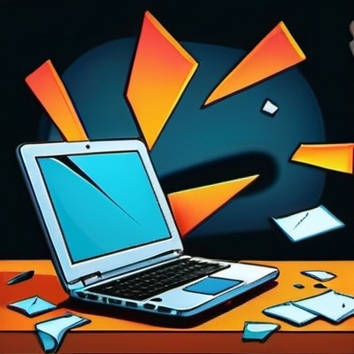

We can fix almost anything!!!
We offer disk repair and data recovery services, data wiping,
malware and virus recovery.
We can also provide bespoke customisations to your hardware.
02
Finance Service for large purchases
We don't usually offer finance, but wouldn't it be really great
if we did!!
Ask in store for more information about finance options for
large purchases of over $10,000.
03
Product Aftercare and Maintenance
Buying a bespoke computer solution from us is not the end of the service we offer.
We also offer regular maintenance packages for your hardware and
software.

Repairs Service
If you're computer has a malfunction, we are the experts you need to fix it.
we have a dedicated support team that will assess the damage
and provide you with a full quote for the work.
When you need our repair service simply pop into the store with your items and we will be more than happy to
help.
Alternatively, you can phone +1212121234567876543 to arrange a pickup of your items from
within a radius of 20 miles of the shop.
Finance Service
If you want to place a business order for over $10,000 and need finance we can help!
Our store is also a registered and audited loans provider accredited by the bank of technological dreams.
To arrange an appointment with our team use the button below to access our appointments booking page.
Aftercare Service
Would you like to have a team of hardware and software specialists available when you need them to repair,
reconfigure or reprogram your bespoke custom pc?
Whether you are a busy professional or an e-sports gamer our aftercare service is for you.
Your repairs will be fast-tracked to our aftercare team who will ensure your pc
is in and out of the shop within 12 hours.
If you need our aftercare service simply pop into the store and ask to chat to the aftercare team.
Again, you can phone +1212121234567876543 to chat to our staff to arrange an aftercare
plan over the phone.